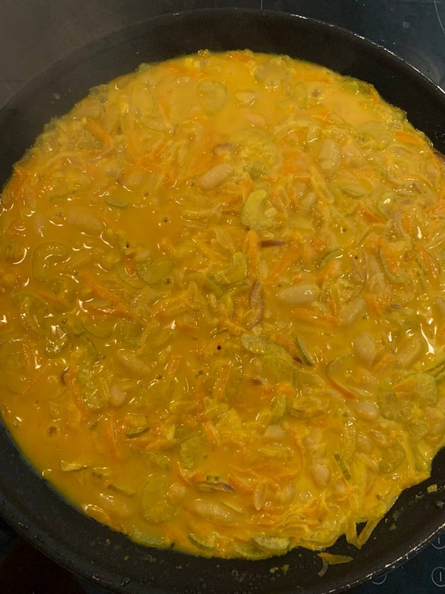

КАРРИ С ОРЗО И БЕЛОЙ ФАСОЛЬЮ
Поженить индийскую и итальянскую кухню — done! Тот случай, когда страшно хочется карри, но без плещущихся в крови макарон ты не чувствуешь себя счастливой.

на вид не так офигенно, как на вкус
Ингридиенты:
- 1 маленькая синяя луковица
- 2 стебля сельдерея
- 1 толстенькая морковь
- 1 банка консервированной белой фасоли (можно взять нут)
- 1 банка кокосового молока
- 100 пасты орзо в сухом виде
- Щедрая горсть карри – специй, пасты, соуса, etc.
Готовим:
- Обжариваем на оливковом масле лук
- Тонко шинкуем стебель сельдерей и добавляем к луку
- Чистим и трём морковь. Дальше что? Правильно, к луку и сельдерею её
- Щедро сдабриваем карри, с умным видом помешиваем
- Выливаем банку фасоли с водичкой, банку кокосового молока, всыпаем орзо и тушим минут 5 под крышкой (можно добавить водички)
- Получается среднее между соусом карри и супом — тёплое, пряное и отрада для микробиома